Agenda
- Introduce the ggplot2 package
Note: There is a lot that we won’t cover today (it’s just an intro).
The ggplot2 package
Today, we’ll primarily be covering the basics of the ggplot2 package. Much of this presentation is based on examples from the new ggplot2 book.

Part of the many reasons Hadley is a cool guy

(It’s no longer there, but if you want access to it let me know)
Other resources
The ggplot2 package is one of the most popular R packages. There are a plethora of resources to learn the syntax.
Perhaps the most definitive, and indexes all the capabilities of ggplot2, along with multiple examples
RStudio cheat sheet can also be helpful
R Graphics Cookbook
Components
Every ggplot plot has three components
- data
- The data used to produce the plot
- aesthetic mappings
- between variables and visual properties
- layer(s)
- usually through the geom function to produce geometric shape to be rendered
Basic syntax

Note that Hadley recommends putting each geom_XXX on a separate line to ease clarity. I agree with this suggestion and will generally follow it, although the above does not. .
mpg data
Very similar to the mtcars data, but with more cases and a few more interesting variables
library(ggplot2)
data(mpg)
head(mpg)
## # A tibble: 6 x 11
## manufacturer model displ year cyl trans drv cty hwy fl
## <chr> <chr> <dbl> <int> <int> <chr> <chr> <int> <int> <chr>
## 1 audi a4 1.8 1999 4 auto(l5) f 18 29 p
## 2 audi a4 1.8 1999 4 manual(m5) f 21 29 p
## 3 audi a4 2.0 2008 4 manual(m6) f 20 31 p
## 4 audi a4 2.0 2008 4 auto(av) f 21 30 p
## 5 audi a4 2.8 1999 6 auto(l5) f 16 26 p
## 6 audi a4 2.8 1999 6 manual(m5) f 18 26 p
## # ... with 1 more variables: class <chr>
Quick example
ggplot(mpg, aes(x = displ, y = hwy)) +
geom_point()

Quick example 2
Note that the only thing that has changed here is the geom
ggplot(mpg, aes(x = displ, y = hwy)) +
geom_smooth()

Add an additional layer
ggplot(mpg, aes(x = displ, y = hwy)) +
geom_point() +
geom_smooth()

Change x and y labels
ggplot(mpg, aes(x = displ, y = hwy)) +
geom_point() +
geom_smooth() +
xlab("Engine Displacement") +
ylab("Highway Miles Per Gallon")

Title
ggplot(mpg, aes(x = displ, y = hwy)) +
geom_point() +
geom_smooth() +
ggtitle("Engine Size and Highway Miles Per Gallon")

Add an additional aesthetic
ggplot(mpg, aes(x = displ, y = hwy, color = class)) +
geom_point()

Add smooth line for each class
Too busy
Note the below spits out some warnings because of the sparsity of the data. I’ve suppressed them here.
ggplot(mpg, aes(x = displ, y = hwy, color = class)) +
geom_point() +
geom_smooth()
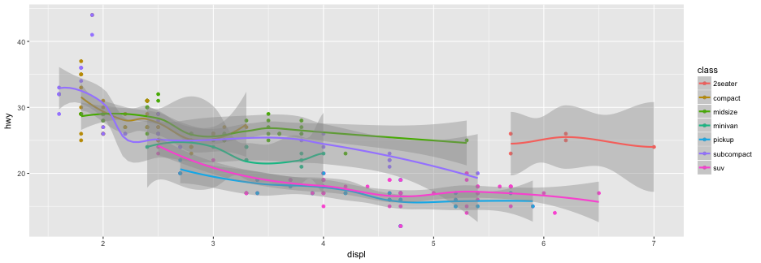
Remove SE
ggplot(mpg, aes(x = displ, y = hwy, color = class)) +
geom_point() +
geom_smooth(se = FALSE)

Change the color of all points
ggplot(mpg, aes(x = displ, y = hwy)) +
geom_point(color = "purple") +
geom_smooth(se = FALSE)

Can you guess how we would change the line color?
ggplot(mpg, aes(x = displ, y = hwy)) +
geom_point(color = "purple") +
geom_smooth(se = FALSE, color = "gray", size = 2, linetype = "dashed")

Worth mentioning, traditional calls to line color/type/size also work
ggplot(mpg, aes(x = displ, y = hwy)) +
geom_point(color = "purple") +
geom_smooth(se = FALSE, col = "gray", lwd = 2, lty = "dashed")

Change the “wiggliness” of the smoother
ggplot(mpg, aes(x = displ, y = hwy)) +
geom_point(color = "purple") +
geom_smooth(span = 0.2)

Geoms for two continuous variables
| Geoms | Description | Code |
|---|---|---|
| jitter | Jitter points (to avoid overlapping) | geom_jitter() |
| point | Plot points at each x|y intersection | geom_point() |
| quantile | Plot lines from quantile regression | geom_quantile() |
| rug | Plot 1d scatterplot on margins (stripchart) | geom_rug() |
| smooth | Plot a smoothing function (many smoothers available) | geom_smooth() |
| text | Add text annotations | geom_text() |
| bin2d | Bin observations that are close together and color according the density | geom_bin2d() |
| density2d | Contour lines of the data density | geom_density2d() |
| hex | Hexagonal bins of data colored according to their density | geom_hex() |
Guided practice
- Load the ggplot2 package.
- Load the diamonds dataset with
data(diamonds) - Set and store the data and aesthetics, in an object
p, using the following code
library(ggplot2)
data(diamonds)
p <- ggplot(diamonds, aes(carat, price))
- Print
p. What do you see? - Explore different geoms, with
p + geom_XXX()(some geoms, such asgeom_hex()require additional package(s)). For example, a basic scatterplot could be produced with
p + geom_point()
- Add at least one additional layer (i.e., produce a plot with at least two layers)
Some possibilities
p + geom_point()
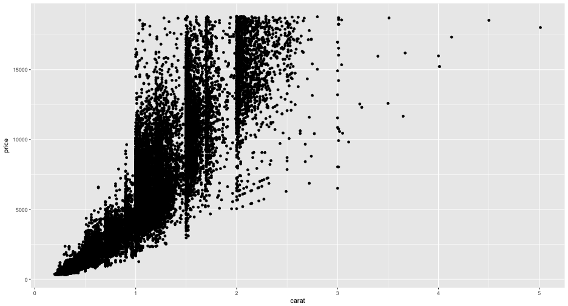
Probably better
p + geom_hex()

Another similar alternative
p + geom_bin2d()

Yet another alternative
p + geom_point(alpha = 0.01) +
geom_density2d(color = "red")

Quantiles
Defaults to the 25th, 50th, and 75th percentiles
p + geom_quantile()

Quantiles
Change the quantiles to deciles (from 10th to 90th)
p + geom_quantile(quantiles = seq(0.1, 0.9, 0.1))

Add an extra layer
p + geom_point() +
geom_rug() +
geom_smooth()

Color by cut
(Note: My color scheme will likel be different than yours because I have the development version installed. Use devtools::install_github("tidyverse/ggplot2")) if you want your to match mine.)
p2cut <- ggplot(diamonds, aes(carat, price, color = cut))
p2cut + geom_point()

Color by color
p2color <- ggplot(diamonds, aes(carat, price, color = color))
p2color + geom_point()

Color by clarity
p2clarity <- ggplot(diamonds, aes(carat, price, color = clarity))
p2clarity + geom_point()

geoms: One variable
| Geoms | Description | Code |
|---|---|---|
| area | Filled area plot | geom_area(stat = “bin”) |
| density | Density plot | geom_density() |
| dotplot | Stacked dotplot, with each dot representing an observation | geom_dotplot() |
| polygon of Frequencies | Polygon of frequencies | geom_freqpoly |
| histogram | Standard histogram | geom_histogram |
| barplot | Standard barchart | geom_bar |
Area plot
price <- ggplot(diamonds, aes(price))
price + geom_area(stat = "bin")
## `stat_bin()` using `bins = 30`. Pick better value with `binwidth`.

Frequency polygons
price + geom_freqpoly()
## `stat_bin()` using `bins = 30`. Pick better value with `binwidth`.
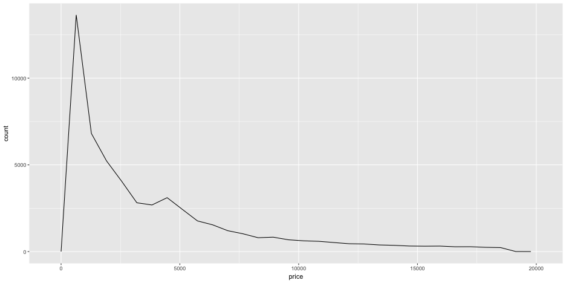
Evaluate frequencies by cut
price2 <- ggplot(diamonds, aes(price, color = cut))
price2 + geom_freqpoly(bins = 50)

Histograms
price + geom_histogram()
## `stat_bin()` using `bins = 30`. Pick better value with `binwidth`.

Change binwidth
price + geom_histogram(binwidth = 5)

Barplots
ggplot(mpg, aes(trans)) +
geom_bar()

Plotting categorical variables
boxplots
Note that the categorical variable must be categorical or declared as a factor
bp <- ggplot(mpg, aes(drv, hwy))
bp + geom_boxplot()

stripcharts
bp + geom_point()
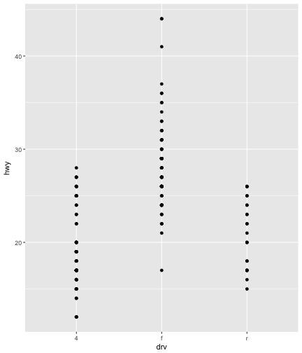
bp + geom_jitter()

Control the amount of jittering
bp + geom_jitter(width = 0.3, height = 0)

Useful together
bp + geom_boxplot() +
geom_jitter(width = 0.3, height = 0)
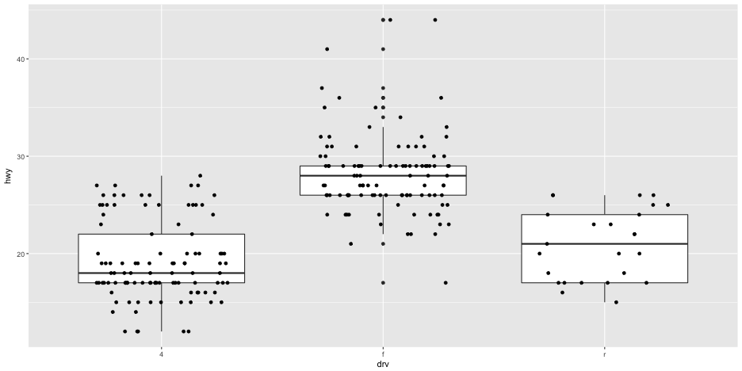
Usually better: Violin plots
bp + geom_violin()
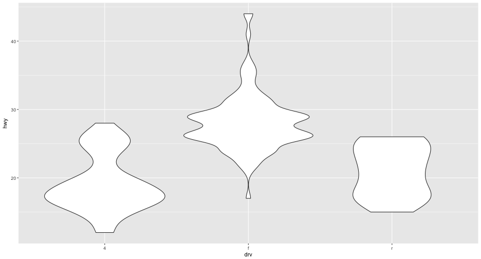
And can also be combined with data
bp + geom_violin() +
geom_jitter(width = 0.3, height = 0)

ridgeline plots (also known as joy plots)
#install.packages("ggridges")
library(ggridges)
ggplot(mpg, aes(hwy, drv)) + # x/y reveresed from boxplots/violin plots
geom_density_ridges()

Lots of levels
Still works pretty well
ggplot(mpg, aes(hwy, model)) +
geom_density_ridges(fill = "cornflowerblue")

Faceting
Produce separate plots according to a specific variable
Back to the mpg dataset: * Produce a separate plot of the relation between engine size and highway miles per gallon for each car type.
hwy <- ggplot(mpg, aes(displ, hwy))
hwy + geom_point() +
facet_wrap(~class)

Add a linear function to each plot
hwy + geom_point() +
geom_smooth(method = "lm") +
facet_wrap(~class)

Example with growth modeling
The data
# Loaded earlier
head(d, n = 15)
## SID TID ScID Months RIT
## 2873 332347 30867 1117 8.7387097 192
## 355 400047 69957 1077 1.6387097 182
## 387 400047 69957 1077 4.3225806 179
## 162 400047 69957 1077 8.9677419 191
## 648 400277 69957 1077 1.2053763 196
## 230 400277 69957 1077 4.3225806 197
## 780 400277 69957 1077 8.9677419 209
## 8878 400597 32247 1257 0.9720430 197
## 8914 400597 32247 1257 4.2258065 202
## 8790 400597 32247 1257 8.3053763 211
## 348 400807 28767 1077 1.3387097 178
## 168 400807 28767 1077 4.1935484 190
## 803 400807 28767 1077 8.8053763 178
## 1150 401227 32787 1087 0.9387097 187
## 1269 401227 32787 1087 4.1612903 192
Random sampling
There are far too many students to plot every one. Instead, we’ll take a random sample of 16 (a couple of times)
set.seed(100)
samp1 <- d[d$SID %in% sample(levels(d$SID), 16), ]
samp2 <- d[d$SID %in% sample(levels(d$SID), 16), ]
samp3 <- d[d$SID %in% sample(levels(d$SID), 16), ]
head(samp1)
## SID TID ScID Months RIT
## 2803 503177 30867 1117 1.1053763 198
## 2829 503177 30867 1117 4.3548387 202
## 2761 503177 30867 1117 8.7387097 214
## 9275 516037 34167 1267 0.9387097 214
## 9191 516037 34167 1267 4.1612903 205
## 9614 516037 34167 1267 8.5720430 209
Sample 1
ggplot(samp1, aes(Months, RIT)) +
geom_point() +
geom_smooth(color = "red", span = 2, se = FALSE) +
facet_wrap(~SID)

Sample 2
ggplot(samp2, aes(Months, RIT)) +
geom_point() +
geom_smooth(color = "red", span = 2, se = FALSE) +
facet_wrap(~SID)

Sample 3
ggplot(samp3, aes(Months, RIT)) +
geom_point() +
geom_smooth(color = "red", span = 2, se = FALSE) +
facet_wrap(~SID)

Alternative: Connect the dots
Note that group is specified in the aesthetic now.
ggplot(samp1, aes(Months, RIT, group = SID)) +
geom_point() +
geom_line()

Or, put all lines in a single plot
ggplot(samp1, aes(Months, RIT, group = SID)) +
geom_point() +
geom_smooth(se = FALSE, span = 2)

What happens if you forget to specify the group?
ggplot(samp1, aes(Months, RIT)) +
geom_point() +
geom_line()
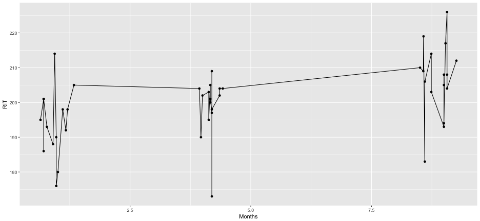
How bad is the nonlinearity, really?
Overlay a linear trend
ggplot(samp1, aes(Months, RIT)) +
geom_point() +
geom_smooth(color = "red", span = 2, se = FALSE) +
geom_smooth(method = "lm", se = FALSE) + facet_wrap(~SID)

ggplot(samp2, aes(Months, RIT)) +
geom_point() +
geom_smooth(color = "red", span = 2, se = FALSE) +
geom_smooth(method = "lm", se = FALSE) + facet_wrap(~SID)

ggplot(samp3, aes(Months, RIT)) +
geom_point() +
geom_smooth(color = "red", span = 2, se = FALSE) +
geom_smooth(method = "lm", se = FALSE) + facet_wrap(~SID)

A few notes
- Equivalent plots could be produced at other levels (in this case, the classroom or school levels)
- The previous plots did produce some warnings (only 3 points with the LOESS)
lfit <- loess(RIT ~ Months, data = samp1, subset = SID == 503177, span = 2)
## Warning in simpleLoess(y, x, w, span, degree = degree, parametric =
## parametric, : span too small. fewer data values than degrees of freedom.
## Warning in simpleLoess(y, x, w, span, degree = degree, parametric =
## parametric, : Chernobyl! trL>n 3
## Warning in simpleLoess(y, x, w, span, degree = degree, parametric =
## parametric, : Chernobyl! trL>n 3
## Warning in sqrt(sum.squares/one.delta): NaNs produced
Different faceting
facet_wrap vs facet_grid

Options for facet_wrap
Change the number of columns
f <- ggplot(mpg, aes(displ, hwy)) + geom_point()
f + facet_wrap(~class, ncol = 4)

Change the direction plots are produced
f + facet_wrap(~class, ncol = 4, dir = "v")
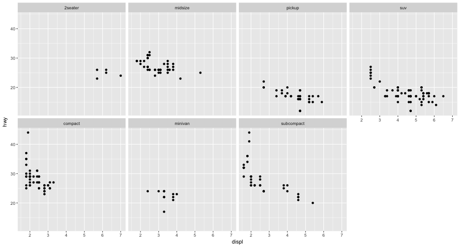
Facet Grid
Note that . must be included on the left, if only a single variable is used
f + facet_grid(. ~ cyl)

f + facet_grid(drv ~ .)

Two variables
f + facet_grid(drv ~ cyl)

Two variables
(The LOESS estimator spits out warnings here again)
f + geom_smooth(span = 2) +
facet_grid(drv ~ cyl)

Scales with faceting
Allow all scales to be produced independently (freely)
f + facet_wrap(~ cyl, scales = "free")

Free y-axis scale, fixed x
f + facet_wrap(~ cyl, scales = "free_y")

Free x-axis scale, fixed y
f + facet_wrap(~ cyl, scales = "free_x")

Change spacing with facet_grid
f + facet_grid(drv ~ cyl, scales = "free", space = "free")

Faceting vs Grouping
ggplot(mpg,
aes(displ, hwy, color = factor(drv))) +
geom_point()

ggplot(mpg, aes(displ, hwy)) +
geom_point() +
facet_wrap(~ drv)
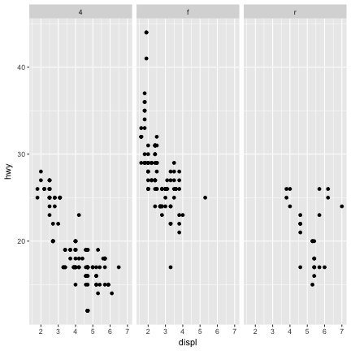
Guided practice (if time allows)
You can view the probability densities of diamond price by cut with the following code.
base <- ggplot(diamonds, aes(price, color = cut))
base + geom_density()
- Use faceting to view the densities by clarity.
- Modify the code to group by clarity and facet by cut. Which do you prefer?
You can view the relation between price and carat with the following code
ggplot(diamonds, aes(carat, price)) + geom_point()
- Modify the code so the points are colored according to their color.
- Use faceting to produce separate plots for each color.
Use faceting to view the densities by clarity.
base <- ggplot(diamonds, aes(price, color = cut))
base + geom_density() + facet_wrap(~ clarity)

Modify the code to group by clarity and facet by cut.
base2 <- ggplot(diamonds, aes(price, color = clarity))
base2 + geom_density() +
facet_wrap(~ cut)

Modify the code so the points are colored according to their color.
ggplot(diamonds, aes(carat, price, color = color)) +
geom_point()

Use faceting to produce separate plots for each color.
ggplot(diamonds, aes(carat, price)) +
geom_point() +
facet_wrap(~ color)
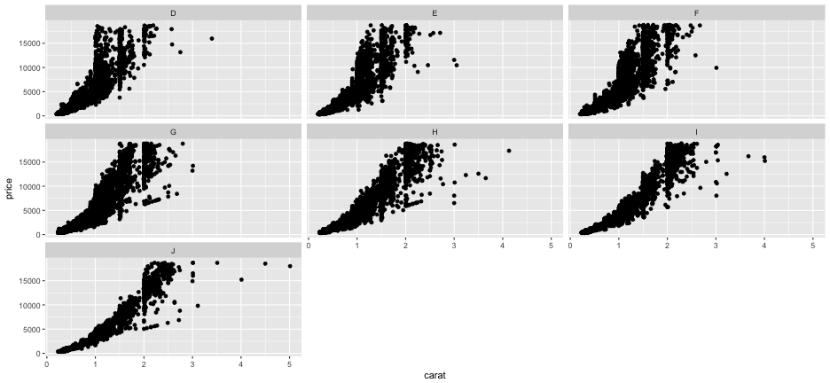
Themes
Overview of themes
- Themes do not change how the data are rendered
- Only change visual properties
- Many built-in themes
- Even more available through extension packages (specifically ggthemes)
- Fully customizable (though the syntax becomes lengthier)
theme_gray (default)
baseP <- ggplot(economics, aes(date, unemploy)) + geom_line()
baseP + theme_gray()
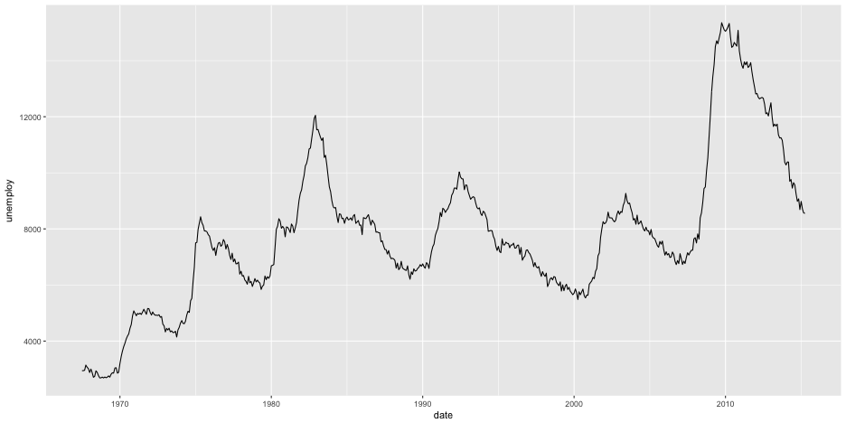
theme_bw
baseP + theme_bw()

theme_classic
baseP + theme_classic()

theme_dark
baseP + theme_dark()
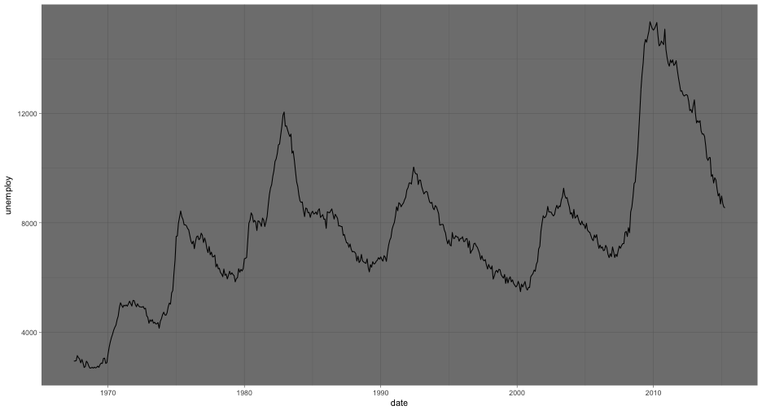
theme_minimal
baseP + theme_minimal()

Further customization
- See http://docs.ggplot2.org/dev/vignettes/themes.html
- See ggplot2 book, Chapter 8
Take Home Message: If you want it to look a certain way, you can do it (essentially nothing is impossible). Often there are others who have developed themes that will be close to what you want, which is easier than developing your own theme (although that can be rewarding in its own right).
Wrap-up
Common things people trip up on
aes()? When to put things inside versus outside? Where to putaes()?- Categorical versus numerical data
- Fill versus color - particularly with barcharts and boxplots.
Wrong spot!
ggplot(mpg, aes(cty, hwy)) +
geom_point(aes(color = "purple"))

ggplot(mpg, aes(cty, hwy)) +
geom_point(color = trans)
## Error in layer(data = data, mapping = mapping, stat = stat, geom = GeomPoint, : object 'trans' not found
Correct spot
ggplot(mpg, aes(cty, hwy)) +
geom_point(color = "purple")

ggplot(mpg, aes(cty, hwy)) +
geom_point(aes(color = trans))

Categorical versus numerical data
Oops
ggplot(mpg, aes(cty, hwy)) +
geom_point(aes(color = cyl))

There we go…
ggplot(mpg, aes(cty, hwy)) +
geom_point(aes(color = factor(cyl)))
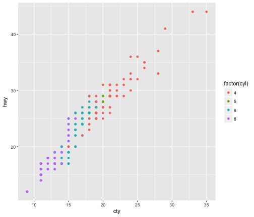
Fill versus color
ggplot(mpg, aes(trans, color = drv)) +
geom_bar()

ggplot(mpg, aes(trans, fill = drv)) +
geom_bar()

plot side-by-side
ggplot(mpg, aes(trans, fill = drv)) +
geom_bar(position = "dodge")

Exploratory versus model-based plotting
Underlying theory
- ggplot2 is optimized for speed in exploratory plotting.
- Make “ugly” plots when exploring, but take the time to beautify them for publication
- Model-based plotting is essentially confirmatory, but can help you understand and communicate the results better.
Load and tidy SEDA Data
| leaid | leaname | fips | stateabb | year | grade | subject | time | mean | se |
|---|---|---|---|---|---|---|---|---|---|
| 100002 | ALABAMA YOUTH SERVICES | 1 | AL | 2009 | 8 | ela | 5 | 210.5474 | 6.723581 |
| 100002 | ALABAMA YOUTH SERVICES | 1 | AL | 2011 | 8 | ela | 5 | 231.6601 | 6.741922 |
| 100002 | ALABAMA YOUTH SERVICES | 1 | AL | 2012 | 8 | ela | 5 | 226.1813 | 6.657756 |
| 100005 | ALBERTVILLE CITY | 1 | AL | 2009 | 3 | ela | 0 | 204.4659 | 2.747565 |
| 100005 | ALBERTVILLE CITY | 1 | AL | 2009 | 4 | ela | 1 | 207.4045 | 2.939638 |
| 100005 | ALBERTVILLE CITY | 1 | AL | 2009 | 5 | ela | 2 | 216.8594 | 2.599224 |
lm-based plot
If we fit a model like lm(mean ~ time, data = td), then we can actually visualize this without even fitting the model, using ggplot
ggplot(td, aes(time, mean)) +
geom_point() +
geom_smooth(method = "lm")

lm-based plot (continued)
Or perhaps we’re interested in separate slopes for reading and math.
ggplot(td, aes(time, mean, color = factor(subject))) +
geom_point() +
geom_smooth(method = "lm")

ggplot(td, aes(time, mean)) +
geom_point() +
geom_smooth(method = "lm") +
facet_wrap(~subject)

Model-output plotting
While the previous plots are basically model-based plots, they can also be exploratory, and often we want to plot results from the model. As mentioned last time, the broom package can help.
m <- lm(mean ~ stateabb, data = td)
library(broom)
tidy_m <- tidy(m, conf.int = TRUE)
head(tidy_m)
## term estimate std.error statistic p.value conf.low
## 1 (Intercept) 233.38152609 0.5341304 436.9373381 0.000000e+00 232.334648
## 2 stateabbAL 3.13844765 0.6010544 5.2215700 1.774676e-07 1.960400
## 3 stateabbAR 3.57728925 0.5698254 6.2778695 3.434620e-10 2.460450
## 4 stateabbAZ 0.09975552 0.5951292 0.1676199 8.668823e-01 -1.066678
## 5 stateabbCA -2.71381607 0.5493784 -4.9397938 7.822482e-07 -3.790580
## 6 stateabbCO 17.70583750 0.6075348 29.1437401 1.328560e-186 16.515089
## conf.high
## 1 234.428404
## 2 4.316495
## 3 4.694129
## 4 1.266190
## 5 -1.637052
## 6 18.896586
ggplot(tidy_m[-1, ], aes(estimate, term, color = term)) +
geom_point() +
geom_errorbarh(aes(xmin = conf.low, xmax = conf.high)) +
geom_vline(xintercept = 0)
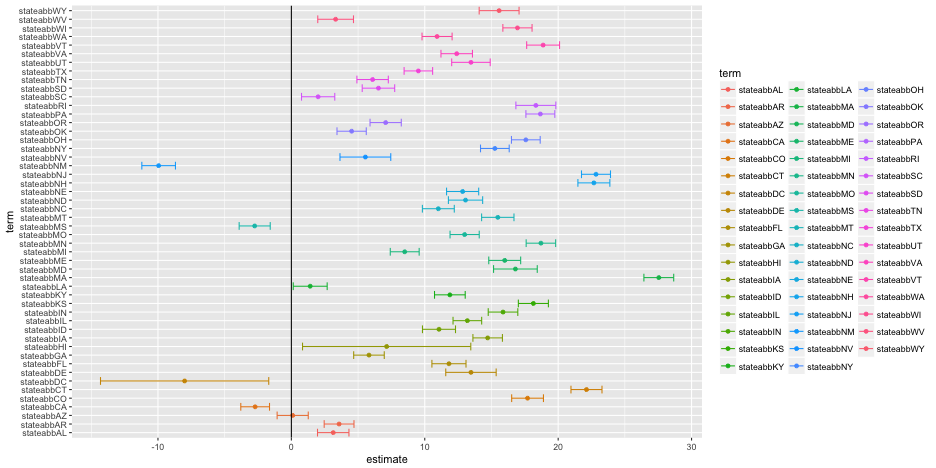